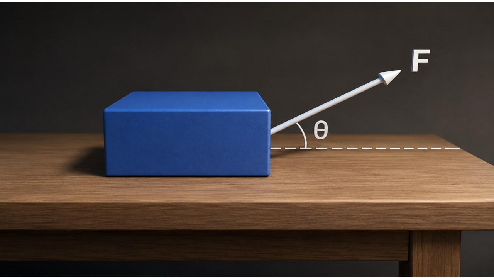

Uma caixa com 120kg está sobre um piso horizontal plano e áspero. Calcule o valor da força para que a caixa com massa de 120kg acelere a 0,5 m/s2. Dados: Valores dos coeficientes de atrito cinético (μc=0,2) e estático (μc=0,3) e considere também senθ=0,60 e cos θ=0,80. Considere a aceleração da gravidade g = 10 m/s2 e despreze a resistência do ar.

Figura 1: Força Aplicada na caixa.
Se F=300N, o que teremos de movimento para a caixa?
[Esta questão não possui figura]
✅ fica parada (usando 300N<326N)
Se a força F formasse um ângulo de 53 graus, qual seria desta para acelerar a caixa?
[Esta questão não possui figura]
✅ 30 m/s (usando v = g·t)